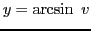
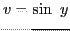
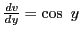
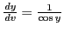
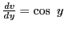
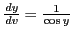

Next: Differentiation of Up: Rules for differentiating standard Previous: Exercises Contents Index
Let , then .
It should be remembered that this function is defined only for values of
 between
between  and
and  inclusive and that
inclusive and that  (the function) is many-valued,
there being infinitely many arcs whose sines will equal
(the function) is many-valued,
there being infinitely many arcs whose sines will equal  . Thus, Figure
5.4
. Thus, Figure
5.4
represents only a piece of the multi-valued inverse function of  ,
represented by taking the graph of
,
represented by taking the graph of  and flipping it about the
and flipping it about the
 line.
In the above discussion, in order to make the function single-valued;
only values of
line.
In the above discussion, in order to make the function single-valued;
only values of  between
between
 and
and
 inclusive are considered; that is, the arc of smallest numerical value whose sine is
inclusive are considered; that is, the arc of smallest numerical value whose sine is  .
.
Differentiating  with respect to
with respect to  by XI,
;
therefore
, by (5.2). But since
by XI,
;
therefore
, by (5.2). But since  is a function of
is a function of  , this may be substituted in
, this may be substituted in
 (see (5.1)),giving
(see (5.1)),giving
david joyner 2008-08-11